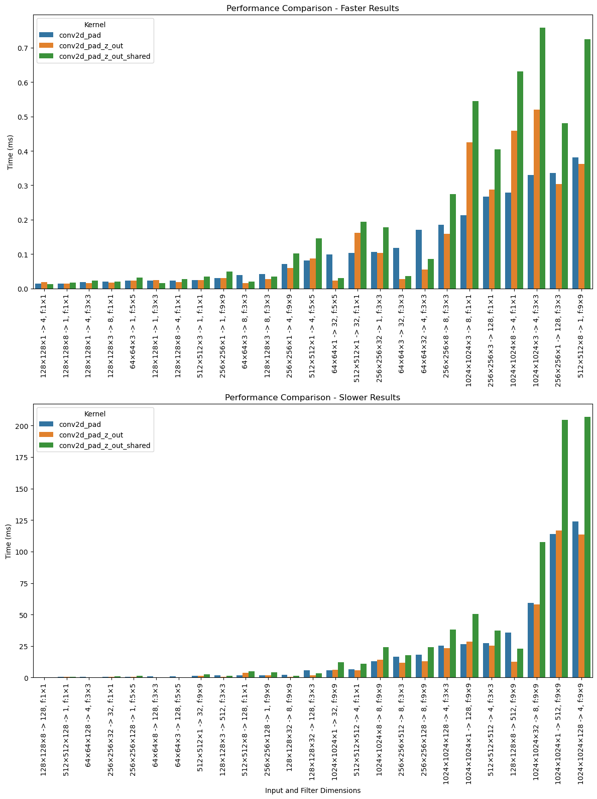

import pandas as pd
import numpy as np
from math import prod
from PIL import Image
from pathlib import Path
from tqdm.auto import tqdmDay 11 - conv2d with shared memory
from lovely_numpy import Lo
from lovely_tensors import monkey_patch; monkey_patch()
from torch import Tensor
from torch.nn.functional import conv2dimport pycuda.driver as cuda
from pycuda.compiler import SourceModule
cuda.init()
device = cuda.Device(0)
print(f"Cuda version: {".".join([str(i) for i in cuda.get_version()])}")
print(f"Device:\t{device.name()}")Cuda version: 12.8.0
Device: NVIDIA GeForce RTX 3080 Laptop GPUcu_file="day_11_conv2d-halo.cu"#include <stdint.h>
#include <stdio.h>
/* This version uses the z grid dimensions for out channels, the inside the the tile is copied into
* shared memory */
__global__ void conv2d_pad_z_out_shared(float *in,
float *out,
float *filter,
int h,
int w,
int in_channels,
int out_channels,
int filter_size /* Must be an odd number */,
float pad) {
int x = blockIdx.x * blockDim.x + threadIdx.x;
int y = blockIdx.y * blockDim.y + threadIdx.y;
int out_ch = blockIdx.z;
int filter_r = (filter_size - 1) / 2;
extern __shared__ float tile[];
// In and Out data dimensions:
// 0 - channel
// 1 - height
// 2 - width
// Filter dimensions:
// 0 - out channels
// 1 - in channels
// 2 - height
// 3 - width
// if (x == 0 && y == 0 && blockIdx.z == 0) {
// printf("h: %d\n", h);
// printf("w: %d\n", w);
// printf("in_channels: %d\n", in_channels);
// printf("out_channels: %d\n", out_channels);
// printf("filter_size: %d\n", filter_size);
// printf("filter r: %d\n", filter_r);
// printf("pad: %f\n", pad);
// // printf("Filter:\n");
// // for (int oc = 0; oc < out_channels; oc++) {
// // printf("Output channel %d:\n", oc);
// // for (int ic = 0; ic < in_channels; ic++) {
// // printf(" Input channel %d:\n", ic);
// // float *sub_filter = filter + (filter_size * filter_size * in_channels * oc) +
// // (filter_size * filter_size * ic);
// // for (int i = 0; i < filter_size; i++) {
// // printf(" ");
// // for (int j = 0; j < filter_size; j++) {
// // printf("%f ", sub_filter[i * filter_size + j]);
// // }
// // printf("\n");
// // }
// // }
// // }
// }
if (x >= w || y >= h) return;
// Loop over the output channels
// // Pointer to the 2d slice of the output
float *sub_output = out + out_ch * w * h;
float R = 0;
// Loop over the input channels
for (int in_c = 0; in_c < in_channels; in_c++) {
// Pointer to the 2d slice of the filter that corresponds to the active input and output
// channels
float *sub_filter = filter + (filter_size * filter_size * in_channels * out_ch) +
(filter_size * filter_size * in_c);
// Pinter to the current channel in the input
float *sub_input = in + (w * h * in_c);
tile[threadIdx.y * blockDim.x + threadIdx.x] = sub_input[y * w + x];
__syncthreads(); // Wait for all threads to load the input
// Apply the filter to the input or the pad value for outside indices.
for (int filter_y = 0; filter_y < filter_size; filter_y++) {
for (int filter_x = 0; filter_x < filter_size; filter_x++) {
int tile_x = threadIdx.x - filter_r + filter_x;
int tile_y = threadIdx.y - filter_r + filter_y;
int input_x = x - filter_r + filter_x;
int input_y = y - filter_r + filter_y;
if (tile_x >= 0 && tile_x < blockDim.x && tile_y >= 0 && tile_y < blockDim.y) {
R += tile[tile_y * blockDim.x + tile_x] *
sub_filter[filter_y * filter_size + filter_x];
} else if (input_x >= 0 && input_x < w && input_y >= 0 && input_y < h) {
R += sub_input[input_y * w + input_x] *
sub_filter[filter_y * filter_size + filter_x];
} else {
R += pad * sub_filter[filter_y * filter_size + filter_x];
}
}
}
__syncthreads(); // Wait for all threads to complete before we load the next input
}
sub_output[y * w + x] = R;
}
## Compiler options for more compile-time warnings.
warn_options=[
'-Xcompiler', '-Wall',
'-Xcompiler', '-Wextra',
'-Xcompiler', '-Wsign-conversion',
'-Xcompiler', '-Wcast-qual',
'-Xcompiler', '-Wunused-parameter',
'-Xcompiler', '-Wdouble-promotion',
'-Xcompiler', '-Wformat=2',
'-Xcompiler', '-Wfloat-equal',
'-Xcompiler', '-Wshadow'
]def benchmark_conv2d_pad(ctx, kernel, input, filter, pad, block_size, grid_size, shared=None, repeat=10, warmup=True):
# input, channel-first
# - Channel
# - Height
# - Width
assert len(input.shape) == 3
# Filter shape should be
# - Out channels
# - In channels
# - Height
# - Width
assert len(filter.shape) == 4
in_ch, h, w = input.shape
out_ch, in_ch2, fh, fw = filter.shape
assert fh == fw, f"Only square filters supported, got shape={filter.shape}"
assert in_ch == in_ch2
out_shape = (out_ch, h, w)
# print(f"shared = {shared}")
# print(f"out_shape={out_shape}")
gpu_input = cuda.mem_alloc_like(input)
gpu_filter = cuda.mem_alloc_like(filter)
out = np.empty(out_shape, dtype=np.float32)
cuda.memcpy_htod(gpu_input, input)
cuda.memcpy_htod(gpu_filter, filter)
ctx.synchronize()
timing=0
for _ in range(repeat):
start = cuda.Event()
end = cuda.Event()
gpu_out = cuda.mem_alloc_like(out)
if warmup:
kernel(gpu_input, gpu_out, gpu_filter,
np.int32(h),
np.int32(w),
np.int32(in_ch),
np.int32(out_ch),
np.int32(fh),
np.float32(pad),
grid=grid_size,
block=block_size,
shared=shared
)
ctx.synchronize()
start.record()
kernel(gpu_input, gpu_out, gpu_filter,
np.int32(h),
np.int32(w),
np.int32(in_ch),
np.int32(out_ch),
np.int32(fh),
np.float32(pad),
grid=grid_size,
block=block_size,
shared=shared)
end.record()
end.synchronize()
timing += end.time_since(start)
timing /= repeat
cuda.memcpy_dtoh(out, gpu_out)
return out, timing;in_chan_range = [1, 3, 8, 32, 128, 512]
out_chan_range = [1, 4, 8, 32, 128, 512]
filter_size = [1, 3, 5, 9]
img_size_range = [64, 128, 256, 512, 1024]
# Let's sample from the available options.
n_samples = 50
# Generate all possible combinations
combinations = []
for in_ch in in_chan_range:
for out_ch in out_chan_range:
for fs in filter_size:
for img_size in img_size_range:
n = in_ch * out_ch * img_size * img_size
# Skip combinatoins that are too large
if n < 1024*1024*32*32:
combinations.append((in_ch, out_ch, fs, img_size))
n_samples = min(n_samples, len(combinations))
sampled_combinations = np.random.choice(len(combinations), size=n_samples, replace=False)
test_cases = [combinations[i] for i in sampled_combinations]tile_width = 32
data = []
# test_cases = [(512, 8, 9, 64)]
ctx = device.make_context()
try:
mod = SourceModule(Path(cu_file).read_text(), options=warn_options)
mod_day10 = SourceModule(Path("day_10_conv2d-experiments.cu").read_text(), options=warn_options)
kernels = {k: mod.get_function(k) for k in ["conv2d_pad_z_out_shared"]} | {k: mod_day10.get_function(k) for k in ["conv2d_pad", "conv2d_pad_z_out"]}
for tc in tqdm(test_cases):
ch_in, ch_out, fs, pixels = tc
array_in = np.random.randn(ch_in, pixels, pixels).astype(np.float32)
filter = np.random.randn(ch_out, ch_in, fs, fs).astype(np.float32)
torch_out = conv2d(Tensor(array_in), Tensor(filter), padding="same")
timings = {}
for kernel_name, kernel in kernels.items():
block_size = (tile_width, tile_width, 1)
grid_size = (((pixels+tile_width-1) // tile_width), ((pixels+tile_width-1) // tile_width), 1 if kernel_name == "conv2d_pad" else ch_out)
out, timing = benchmark_conv2d_pad(
ctx=ctx,
kernel=kernel,
input=array_in,
filter=filter,
pad=0,
block_size=block_size,
grid_size=grid_size,
shared=tile_width * tile_width * 4 if kernel_name == "conv2d_pad_z_out_shared" else 0,
repeat=3,
warmup=True
)
if np.isclose(out, torch_out).mean() < 0.8:
print("### Result mismatch ###")
print(f"Kernel: {kernel_name}")
print(f"Input shape: {array_in.shape}")
print(f"Filter shape: {filter.shape}")
print(f"Result shape: {(filter.shape[0], array_in.shape[1], array_in.shape[2])}")
print(f"Grid size: {grid_size}")
print(f"Block size: {block_size}")
print(f"Total threads: {prod((*grid_size, *block_size))}")
timings[kernel_name] = timing
data.append({
'in_ch': ch_in,
'out_ch': ch_out,
'filter_size': fs,
'img_size': pixels,
# 'kernel': kernel_name,
} | timings)
finally:
ctx.pop()
ctx.detach()
results = pd.DataFrame(data)# Sort by conv2d_pad timing
results_sorted = results.sort_values(by='conv2d_pad')
# Create a plot comparing the two kernels
import matplotlib.pyplot as plt
import seaborn as sns
# Create labels for x-axis that include dimensions
results_sorted['dimensions'] = results_sorted.apply(
lambda row: f"{int(row['img_size'])}×{int(row['img_size'])}×{int(row['in_ch'])} -> {int(row['out_ch'])}, f:{int(row['filter_size'])}×{int(row['filter_size'])}",
axis=1
)
# Melt the dataframe to get it in the right format for seaborn
melted_results = pd.melt(
results_sorted,
id_vars=['in_ch', 'out_ch', 'filter_size', 'img_size', 'dimensions'],
value_vars=['conv2d_pad', 'conv2d_pad_z_out', 'conv2d_pad_z_out_shared'],
var_name='kernel',
value_name='time'
)
# Split the data into two halves based on timing
midpoint = len(results_sorted) // 2
faster_results = melted_results[melted_results['dimensions'].isin(results_sorted['dimensions'][:midpoint])]
slower_results = melted_results[melted_results['dimensions'].isin(results_sorted['dimensions'][midpoint:])]
# Create a figure with two subplots
fig, (ax1, ax2) = plt.subplots(2, 1, figsize=(12, 16))
# Plot faster results in the first subplot
sns.barplot(x='dimensions', y='time', hue='kernel', data=faster_results, ax=ax1)
ax1.set_xlabel('')
ax1.set_ylabel('Time (ms)')
ax1.set_title('Performance Comparison - Faster Results')
ax1.tick_params(axis='x', rotation=90)
ax1.legend(title='Kernel')
# Plot slower results in the second subplot
sns.barplot(x='dimensions', y='time', hue='kernel', data=slower_results, ax=ax2)
ax2.set_xlabel('Input and Filter Dimensions')
ax2.set_ylabel('Time (ms)')
ax2.set_title('Performance Comparison - Slower Results')
ax2.tick_params(axis='x', rotation=90)
ax2.legend(title='Kernel')
# Adjust layout
plt.tight_layout()
plt.show()
# Also display the sorted results table
results_sorted
| in_ch | out_ch | filter_size | img_size | conv2d_pad_z_out_shared | conv2d_pad | conv2d_pad_z_out | dimensions | |
|---|---|---|---|---|---|---|---|---|
| 6 | 1 | 4 | 1 | 128 | 0.013312 | 0.014677 | 0.018432 | 128×128×1 -> 4, f:1×1 |
| 37 | 8 | 1 | 1 | 128 | 0.017408 | 0.014677 | 0.013995 | 128×128×8 -> 1, f:1×1 |
| 23 | 1 | 4 | 3 | 128 | 0.022560 | 0.017749 | 0.015019 | 128×128×1 -> 4, f:3×3 |
| 20 | 3 | 8 | 1 | 128 | 0.019456 | 0.019797 | 0.016384 | 128×128×3 -> 8, f:1×1 |
| 35 | 3 | 1 | 5 | 64 | 0.032085 | 0.022187 | 0.022528 | 64×64×3 -> 1, f:5×5 |
| 11 | 1 | 1 | 3 | 128 | 0.015701 | 0.022187 | 0.024576 | 128×128×1 -> 1, f:3×3 |
| 36 | 8 | 4 | 1 | 128 | 0.026624 | 0.023211 | 0.018432 | 128×128×8 -> 4, f:1×1 |
| 16 | 3 | 1 | 1 | 512 | 0.034133 | 0.024917 | 0.024917 | 512×512×3 -> 1, f:1×1 |
| 3 | 1 | 1 | 9 | 256 | 0.048811 | 0.030720 | 0.030379 | 256×256×1 -> 1, f:9×9 |
| 29 | 3 | 8 | 3 | 64 | 0.019797 | 0.038571 | 0.016043 | 64×64×3 -> 8, f:3×3 |
| 28 | 3 | 8 | 3 | 128 | 0.034475 | 0.041984 | 0.026891 | 128×128×3 -> 8, f:3×3 |
| 27 | 1 | 4 | 9 | 256 | 0.102400 | 0.070997 | 0.060075 | 256×256×1 -> 4, f:9×9 |
| 30 | 1 | 4 | 5 | 512 | 0.145067 | 0.081291 | 0.087381 | 512×512×1 -> 4, f:5×5 |
| 24 | 1 | 32 | 5 | 64 | 0.030379 | 0.098645 | 0.022187 | 64×64×1 -> 32, f:5×5 |
| 43 | 1 | 32 | 1 | 512 | 0.193536 | 0.103765 | 0.162133 | 512×512×1 -> 32, f:1×1 |
| 44 | 32 | 1 | 3 | 256 | 0.177493 | 0.105813 | 0.102741 | 256×256×32 -> 1, f:3×3 |
| 26 | 3 | 32 | 3 | 64 | 0.035861 | 0.117419 | 0.026624 | 64×64×3 -> 32, f:3×3 |
| 19 | 32 | 4 | 3 | 64 | 0.086016 | 0.169984 | 0.055637 | 64×64×32 -> 4, f:3×3 |
| 48 | 8 | 8 | 3 | 256 | 0.274411 | 0.184661 | 0.159061 | 256×256×8 -> 8, f:3×3 |
| 22 | 3 | 8 | 1 | 1024 | 0.545109 | 0.212992 | 0.424960 | 1024×1024×3 -> 8, f:1×1 |
| 8 | 3 | 128 | 1 | 256 | 0.403819 | 0.267605 | 0.287712 | 256×256×3 -> 128, f:1×1 |
| 45 | 8 | 4 | 1 | 1024 | 0.630827 | 0.278187 | 0.458411 | 1024×1024×8 -> 4, f:1×1 |
| 31 | 3 | 4 | 3 | 1024 | 0.758027 | 0.330411 | 0.520192 | 1024×1024×3 -> 4, f:3×3 |
| 18 | 1 | 128 | 3 | 256 | 0.480256 | 0.335189 | 0.303787 | 256×256×1 -> 128, f:3×3 |
| 17 | 8 | 1 | 9 | 512 | 0.724992 | 0.380587 | 0.361813 | 512×512×8 -> 1, f:9×9 |
| 39 | 8 | 128 | 1 | 128 | 0.270379 | 0.387413 | 0.155989 | 128×128×8 -> 128, f:1×1 |
| 25 | 128 | 1 | 1 | 512 | 0.657067 | 0.400043 | 0.393557 | 512×512×128 -> 1, f:1×1 |
| 14 | 128 | 4 | 3 | 64 | 0.310613 | 0.631808 | 0.172032 | 64×64×128 -> 4, f:3×3 |
| 32 | 32 | 32 | 1 | 256 | 1.176277 | 0.664235 | 0.752640 | 256×256×32 -> 32, f:1×1 |
| 33 | 128 | 1 | 5 | 256 | 1.505963 | 0.763904 | 0.733867 | 256×256×128 -> 1, f:5×5 |
| 2 | 8 | 128 | 3 | 64 | 0.202411 | 1.090560 | 0.121173 | 64×64×8 -> 128, f:3×3 |
| 49 | 3 | 128 | 5 | 64 | 0.228352 | 1.109632 | 0.112299 | 64×64×3 -> 128, f:5×5 |
| 13 | 1 | 32 | 9 | 512 | 2.565461 | 1.423701 | 1.346496 | 512×512×1 -> 32, f:9×9 |
| 42 | 3 | 512 | 3 | 128 | 1.388171 | 1.845259 | 0.712021 | 128×128×3 -> 512, f:3×3 |
| 21 | 8 | 128 | 1 | 512 | 4.980736 | 1.896128 | 3.599317 | 512×512×8 -> 128, f:1×1 |
| 9 | 128 | 1 | 9 | 256 | 4.014080 | 1.963691 | 1.923755 | 256×256×128 -> 1, f:9×9 |
| 46 | 32 | 8 | 9 | 128 | 1.408363 | 1.988608 | 0.731477 | 128×128×32 -> 8, f:9×9 |
| 0 | 32 | 128 | 3 | 128 | 3.384661 | 5.587627 | 1.667072 | 128×128×32 -> 128, f:3×3 |
| 40 | 1 | 32 | 9 | 1024 | 12.256256 | 5.811200 | 6.014293 | 1024×1024×1 -> 32, f:9×9 |
| 47 | 512 | 4 | 1 | 512 | 11.096747 | 6.729387 | 5.955925 | 512×512×512 -> 4, f:1×1 |
| 4 | 8 | 8 | 9 | 1024 | 24.125451 | 12.846773 | 14.283093 | 1024×1024×8 -> 8, f:9×9 |
| 41 | 512 | 8 | 3 | 256 | 17.939190 | 16.718848 | 11.764704 | 256×256×512 -> 8, f:3×3 |
| 38 | 128 | 8 | 9 | 256 | 24.203318 | 18.254550 | 12.945440 | 256×256×128 -> 8, f:9×9 |
| 5 | 128 | 4 | 3 | 1024 | 37.974016 | 25.287701 | 23.289515 | 1024×1024×128 -> 4, f:3×3 |
| 7 | 1 | 128 | 9 | 1024 | 50.371583 | 26.570752 | 28.357973 | 1024×1024×1 -> 128, f:9×9 |
| 34 | 512 | 4 | 3 | 512 | 37.451136 | 27.270486 | 25.335520 | 512×512×512 -> 4, f:3×3 |
| 1 | 8 | 512 | 9 | 128 | 23.107925 | 35.587467 | 12.653866 | 128×128×8 -> 512, f:9×9 |
| 12 | 32 | 8 | 9 | 1024 | 107.734355 | 59.062336 | 57.880950 | 1024×1024×32 -> 8, f:9×9 |
| 10 | 1 | 512 | 9 | 1024 | 204.436142 | 113.762347 | 116.663638 | 1024×1024×1 -> 512, f:9×9 |
| 15 | 128 | 4 | 9 | 1024 | 206.882517 | 124.058678 | 113.531560 | 1024×1024×128 -> 4, f:9×9 |